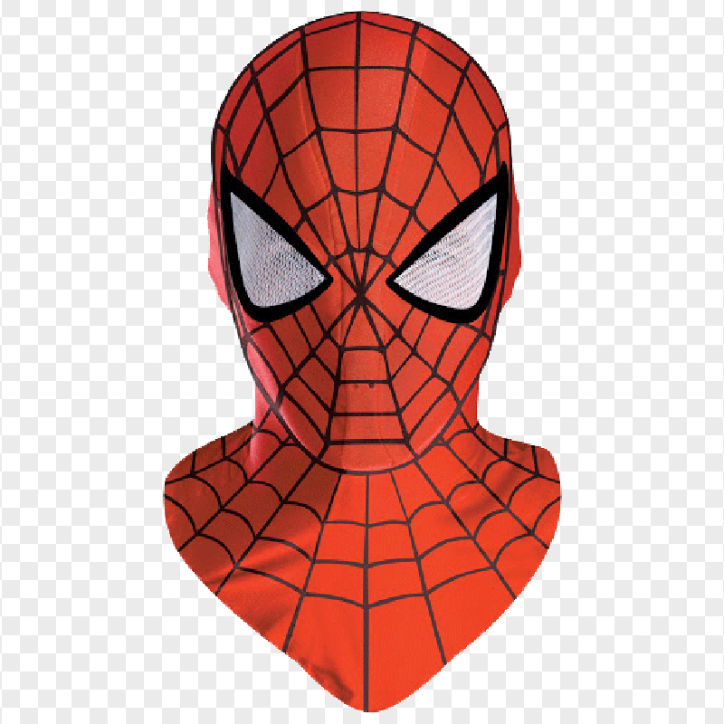

DESIGN RULES FOR THOSE
WHO LOOKED AT THE
PRINCIPLES OF DESIGN
AND WANTED AN ALTERNATIVE
I thought I was exercising my freedom by making this.
 Rule 1
Being ironic is the best design choice you could make – use nonsense and the absurd to your advantage and you will find that at best it makes you giggle, at worst – it makes you sigh.
Rule 1
Being ironic is the best design choice you could make – use nonsense and the absurd to your advantage and you will find that at best it makes you giggle, at worst – it makes you sigh.
Rule 2
When you’re going for a black and white theme – avoid making the background black and text white.
White background.
Black text.
Delicious.
Rule 3
While designing cards or invitations for festive occasions like funerals and birthdays, the text should always be cursive.
Rule 4
When you’re downloading an image that has a watermark – don’t plastic surgery away its birthmarks, that’s really rude.

Rule 5
Everything you design must have a face on it and it should never be your own.
Rule 6
Always start
with asymmetry, when that
just does not work – then
make things symmetrical.
But don’t just start
directly with
symmetry because you think
no one’s watching. I will be watching.
Always start
with asymmetry, when that
just does not work – then
make things symmetrical.
But don’t just start
directly with
symmetry because you think
no one’s watching. I will be watching.
 Rule 7
Browns and beiges are prohibited. That’s right – even at gunpoint.
Rule 7
Browns and beiges are prohibited. That’s right – even at gunpoint.
Refresh the page to go back to the cover